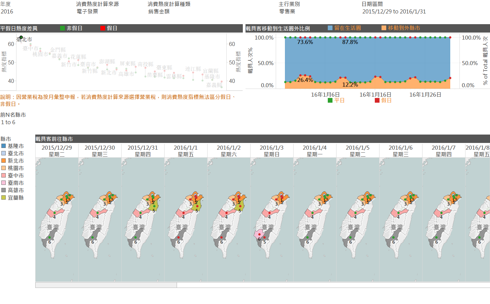

聲明
*以下資料為其他機關開放在政府資料開放平台之資料，本分析主題不負責該資料開放及資料釐正，請洽原開放資料單位：
1. 景點 - 觀光資訊資料庫
資料所屬單位為交通部觀光局，資料網址為http://data.gov.tw/node/7777
2. 每月氣象-局屬地面測站資料
資料所屬單位為交通部中央氣象局，資料網址為http://data.gov.tw/node/9207
提供近四個年度的景點消費熱度排名的變化情形，可選擇熱門排名或冷門排名、消費熱度計算來源為電子發票或營業稅、消費熱度計算種類為銷售金額或發票張數，並提供村里地區相關景點名稱供參考。
此儀表版圖表之分析資料來源可參考本頁下方資料集：
1)電子發票消費熱度指標
提供最新年度與往前一年的景點熱度指標成長或衰退差距幅度排名、於地圖上呈現該村裡的景點地圖、四個年度的景點熱度指標變化趨勢及使用載具消費的主要客源縣市、鄉鎮市區的比例。
此儀表版圖表之分析資料來源可參考本頁下方資料集：
1)電子發票消費熱度指標
2)電子發票載具客源地區統計
提供持載具消費電子發票者在過去四年，每日在消費生活圈的移動情形，可以了解各縣市的消費者在平日、假日的移動變化或各縣市載具消費者最多人次前往哪些縣市。
提供使用者選擇特定日期觀察全國地圖各縣市的消費熱度指標並於地圖標示各景點位置、景點說明及景點圖片。並了解所選擇鄉鎮市區使用載具消費者的主要客源縣市、鄉鎮市區的比例，並呈現單一村里景點四個年度的消費熱度指標及平均溫度等變化趨勢。
此儀表版圖表之分析資料來源可參考本頁下方資料集：
1)電子發票消費熱度指標
2)電子發票載具客源地區統計
以全年各縣市、鄉鎮市區、村里為單位計算電子發票消費發票張數、金額或雙月(或每月)營業稅申報銷售額、申報發票字軌起迄估算發票張數，並轉換為張數指標、銷售額指標等不透漏營業人營業資訊細節等方式呈現區域的消費熱度。
資料集欄位：
年度、縣市、縣市代碼、鄉鎮市區、鄉鎮市區代碼、村里、村里代碼、主行業別、主行業別代碼、消費熱度計算來源、張數指標、銷售額指標。
消費熱度計算來源定義：
表示該筆指標計算來源是電子發票(B2C開立發票明細)、營業稅申報資料，因電子發票在不同區域的普及程度不同，此時即可轉換計算來源為營業稅申報資料。
張數指標定義：
以村里為單位的2個欄位(電子發票張數、BLM申報銷項發票字軌起訖號彙整張數)，計算2個欄位的各自排名，再切分為100等分，換算為0~100的數值，做為2項張數指標。
銷售額指標定義：
以村里為單位的2個欄位(電子發票金額、營業稅銷售額)，計算2個欄位的各自排名，再切分為100等分換算，為0~100的數值，做為2項金額指標。
以年度統計各載具單位消費最多電子發票張數的區域作為該載具的客源區域，客源區域維度可分為縣市、鄉鎮市區兩個層級，可由客源區域欄位挑選。
資料集欄位：
年度、縣市、縣市代碼、鄉鎮市區、鄉鎮市區代碼、主行業別、主行業別代碼、外來生活圈、客源區域維度、客源縣市、客源縣市代碼、客源鄉鎮市區、客源鄉鎮市區代碼、消費金額、載具人次。
外來生活圈欄位定義：
若某載具在2016年索取50張電子發票，在台北市信義區消費30張，在新北市永和區消費12張，在高雄市左營區消費8張，則該載具在2016年的30張消費資料會註記消費地點最多張的去地區為客源縣市、鄉鎮市區，即台北市信義區(因為載具的持有者實際生活在哪裡，本平台並無任何相關資料，因此以此種方法進行推估)。
因此，台北市信義區的消費資料會註記外來生活圈註記為N，在新北市永和區、高雄市左營區的消費資料會註記外來生活圈為Y。
以全年各縣市、鄉鎮市區、村里為單位計算電子發票消費發票張數、金額或雙月(或每月)營業稅申報銷售額、申報發票字軌起迄估算發票張數，並轉換為張數排名值、銷售額排名值等不透漏營業人營業資訊細節等方式呈現區域的消費排名值。
資料集欄位：年度、縣市、縣市代碼、鄉鎮市區、鄉鎮市區代碼、村里、村里代碼、主行業別、主行業別代碼、消費熱度計算來源、發票張數排名值、銷售金額排名值。